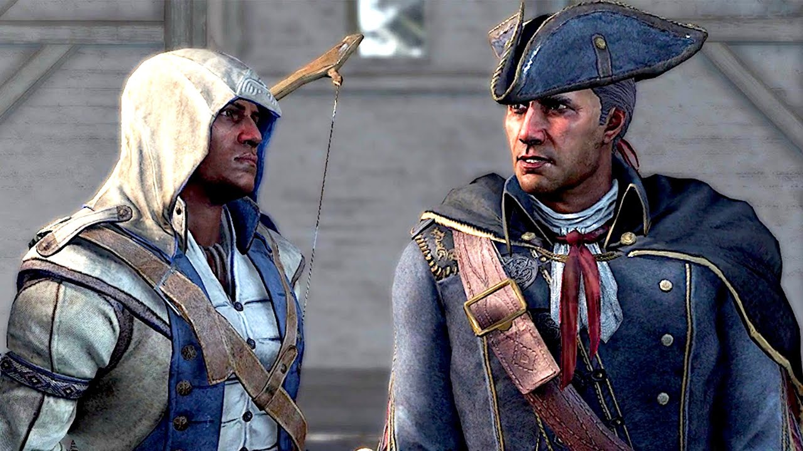

How Gaming Shaped My Story
Date Created: May 27, 2025
Date Modified:
They say that books are windows to other worlds, but for me, video games were the doors. More than just entertainment, games became my teachers, my therapists, my social spaces, and my canvas for creativity. Each key pressed by my hands was a note to experiences that would fundamentally shape who I am today.
This isn't just about high scores or obsession. It's about the moments when it taught me about friendship, when a game made me cry, when it showed me that failure is just another step toward growth. It's about how digital worlds helped me understand the real one, or getting away from it, fo a while.
Snake
I remember that I never get to experience gaming when I was young. I grew up in a fairly traditional household so I got is some times off to watch Disney Channel or Cartoon Network on TV. Not until grade 6-7 that I got gifted by my brother a Nokia 1208 (aka "The Brick") and with it, the classic Snake game.
It is a fairly simple game, you, as a snake, try to eat as many apples as you can until you fit the screen and get a victory screen. You eat your own body and you got a score screen instead.
Simple, but as a kid, I felt unsatisfied. Not because of achievement hunting, but the fact that there are other kids who also familiar with the games, were so good at it. They got very close to winning, only that, no one ever get to the victory screen. The idea that something might be just out of reach but still possible. Frustrating, yes, but also motivating. Nonetheless, it was so hype.
The fact that a calm afternoon in the classroom, it is break time, children is talking, and there is a group of boys and girls screaming bloody murder at each other as they traverse the 96 × 68 pixels screen is making it funnier.
Raw and Beautiful
That moment with the Nokia 1208 and Snake wasn't just about the game — it was my first taste of true(?) digital agency. The screen was tiny, the mechanics simple, but it gave me control, challenge, and community. For all I know, that is multiplayer, just not holding a controller.
I would kill to go back to that time again
I don't just miss the game — I miss the innocence of shared obsession. The chaos. The shouting. The triumphs. That's gold.

Oh, there is Snake 3D too. Still fun, though. But my obsession with it comes less prominent because of...
Assassin's Creed III
Assassin's Creed III was my first real introduction to storytelling in games. I don't remember how I got to playing it, but I do remember starting the gameplay with high expectation.
I will admit, as a little boy, I need to learn the mechanics. When you're new to gaming - especially learning movement, stealth, combat, parkour, ..., your brain is busy processing mechanics. I can't keep up with the story, so at the time, I didn't care much about it. The only single thing I remember is a concept: even in hopelessness, with action, you can always stay positive with a trust in your ability.
Hope in Action
Back then, AC3 showed me that even in hopeless situations, with action and belief in your own ability, you can stay positive.
I do remember Connor Kenway and his father, Haytham Kenway.
I remember the first time I saw Haytham, I thought he was the main character.
I remember the first time I saw Connor, I thought he was a side character.
I remember the first time I saw them together, I thought they were brothers, or just two strangers.
At least, until Connor called him father.
Then they fight each other, and I was like, "Wait, what the hell?!"
And when Connor defeated and killed his dad, I was "Wait, what the fk?!"
Then I quickly brushed it off, because I have to prepare for an important exam, when I finished the game.
But now, having started this blog, I searched up online and watched some of the old footage of AC3 again. And man, I was so stupid to not focus on the story between the father and son back then.
Okay, so they are kind of scary looking, right? Or maybe not, maybe they are just look mysterious, or badass, ... You pick your poison.
You start the game playing as Haytham Kenway, a charismatic, cold, and calculated man. Charismatic, erudite, and level-headed, Haytham acted with authority and was a natural leader. Think of him as a natural aristocratic bearing, with a strong sense of duty and honor towards the Templar and its vision of a New World Order.
He comes to America to find a First Civilization temple and expand Templar control — using order, control, and hierarchy to "bring peace."
Haytham falls for Ziio, a Mohawk woman. Their child, Ratonhnhaké:ton (or known by his adopted name Connor), is raised in a village with indigenous values — community, freedom, harmony with nature. His childhood is idyllic until the chaos caused by colonial powers, killing his mother and burning his village. This fuels his drive for justice.
A mere thirteen-year-old when thrust into the outside world, Connor has a strong sense of morality, but quite naive.
Connor is recruited by Achilles, an old Assassin, or more like pressure him into it. Through him, Connor learns to the way of an Assassin. He doesn't just join the Assassins - he believes they'll help him protect his people, for the people, by the people, which he claimed "as they should."
But as the journey goes along, the story becomes more complicated.
The core conflict is philosophical. The Colonial Templars is peace through control, while the Colonial Assassins is all about Freedom at all costs.
But that is not what Connor wants.
Throughout the story, from initially to protect his people and seek misguided revenge on Charles Lee for burning his village and killing his mother, he participated in the American Revolution solely for these reasons. Though, he learned that this was a disillusioned endeavor.
Connor's breaking point started when he learnt that Washington ordered Connor's village burned when he was a boy, not Charles Lee, as Washington claim that there are certain indigenous people sides with the Loyalists.
This makes the commander responsible for Kaniehtí:io's death and not the Templars as Connor had assumed for years.
Despite this shattering revelation, Connor knew that his people's safety came first and immediately set off to deal with the Continental soldiers sent to attack Kanatahséton. Although Haytham wished to accompany him, the Assassin angrily criticized his father for withholding this information from him and only revealing it when it suited the Templars' aims.
Connor managed to kill Washington's messengers as he traveled to his village and arrived to find it unharmed. However, once there, Connor was informed by the Clan Mother that Lee had already rallied several of the village's warriors to repel the invading Continental soldiers. Unwilling for his village to become involved in the war, the Assassin knocked out each of the warriors readying to ambush the Continentals. However, as he ran towards the last one, Kanen'tó:kon, he threw Connor off and threatened him with a knife.
Kanen'tó:kon angrily mentioned that he should not have believed Connor would protect their village, accusing him of turning against their people and being seduced by Washington's cause. Though Connor desperately insisted that Lee had fed him lies, Kanen'tó:kon attacked him. After a brief struggle, Connor was forced to kill his friend, who in his final moments claimed that the British would win the war and ensure the Kanien'kehá:ka's safety.
The myth of the Patriots crumbles for him: the “heroes” of the revolution are just men, capable of cruelty under the flag of liberty.
Connor still fights for freedom, but in his own definition. That's where his moral compass stands out—even when seemingly betrayed from all sides, he doesn't turn cynical. He keeps going.
What about Haytham, then?
He's a Templar who truly believes in structure, control, and civilization. As loyal as he is to templars, admits - even if indirectly - that in his eyes, Assassins did work towards something he admires, that being peace. Despite their difference, or even his distaste for the brotherhood as it is, he recognizes subconciously that there is something he at the very least used to agree on with what is essentially his sworn enemy.
And it is crazy that And Haytham does have a point. America wanted freedom from the British (American Revolutionary War), they were only united for one cause and at the end of that cause they will fight amongst themselves (American Civil War). It is wild to see how accurate Haytham's speech is to whats going on in the past and today's society, no less.
But his affection for his son got the better of him.
This strange death of his. He spends all his time with Connor exchanging with him, giving him tasks, helping him mature. If he wanted to simply use Connor as a tool, he wouldn't go to such lengths, putting his own life at risk several times. He wants to ensure Connor's survival, while sharing his world views with him. This is evident as his last words as they fight is a warning that the Templars won't die with him. And he slowly chokes Connor to have him learn one final lesson, to be ready to kill whoever would be a threat to him, even his own father.
Haytham shows no bitterness in the end. If anything, he's proud of Connor
"Don't think I have any intention of caressing your cheek and saying I was wrong. I will not weep and wonder what might have been. I'm sure you understand. Still, I'm proud of you in a way. You have shown great conviction. Strength. Courage. All noble qualities. I should have killed you long ago."
―Haytham's final words to his son, 1781.
It ends on Connor, bleeding, standing in a country that took everything from him — his people still displaced, the land still lost.
No one honors him. No stories. None of his patriot allies honors him. But he protects the people anyway.
But he doesn't quit.
He doesn't get a happy ending. He doesn't even get closure.
But he rebuilds the Brotherhood.
He frees slaves, quietly, without fanfare.
He protects the Homestead, a little patch of chosen family and freedom.
He rejects glory—because glory is a lie.
Even with all the losses and betrayals he endured, Connor refused to abandon his idealistic vision of the world, one where peace and freedom could coexist. However, his experiences did alter his perspective, as he eventually realized the world was much crueler than he had initially thought. Despite agreeing with Haytham that there would always be people who pursued only their self-interest, he refused to lose hope in humankind like his father had. Instead, he held firm to his belief that humanity had the potential to change for the better, and resolved to never stop fighting for his dream, even if it took another thousand years for it to finally come true.
Emotional Milestone
Learning that sometimes heroes can't save everyone, and that's what makes their efforts to save anyone all the more meaningful.
Life Lesson: Complexity of Character
Sephiroth wasn't evil because he was born evil—he was broken by truth and isolation. Cloud wasn't a hero because he was perfect—he was heroic because he chose to act despite his flaws and confusion. These characters taught me that people aren't simply good or bad; they're complex beings shaped by their experiences.
The game's themes of environmentalism, corporate corruption, and finding your true self felt incredibly relevant as I navigated high school. When I struggled with fitting in or understanding my place in the world, I remembered Cloud's journey from confused mercenary to reluctant hero to someone who finally understood himself.
Every time I replay FFVII, I discover new layers. Now, as an adult working in AI and data science, I find new meaning in the story's exploration of what makes us human versus what makes us merely intelligent.
Minecraft
Minecraft came into my life during a particularly isolated period. Moving to a new city, struggling to make friends, I found solace in a world made of blocks where I could build anything I could imagine.
What started as building simple houses evolved into elaborate cities, redstone computers, and collaborative projects with friends scattered across the globe. Minecraft taught me that creativity has no limits—only the boundaries we place on ourselves.
Social Achievement
Building our first community server taught me more about leadership, compromise, and collaboration than any classroom ever could.
Life Lesson: The Joy of Creation
In Minecraft, you're not just consuming content—you're creating it. Every block placed is a decision, every structure a story. This game taught me that the act of creation itself is rewarding, regardless of whether anyone else ever sees or appreciates what you've built.
Our server became a digital neighborhood. We had town meetings, collaborative builds, and inside jokes that lasted years. When one friend was going through a tough time at home, we all pitched in to build him an elaborate castle. When another achieved something in real life, we'd commemorate it with a monument in our shared world.
Today, when I approach data science projects or write code, I carry that same spirit of experimentation and iterative improvement that Minecraft fostered. Build, test, refine, rebuild.
League of Legends
League of Legends was my university. For four years, it taught me about teamwork, leadership, handling criticism, and maintaining composure under pressure—lessons that proved invaluable in both my academic and professional life.
Playing with a consistent team taught me that individual skill means nothing without coordination. The best play is the one your team can execute together, not necessarily the most mechanically impressive one.
Communication Master
Learning to give and receive constructive feedback in high-pressure situations—skills that transferred directly to group projects and workplace collaboration.
Life Lesson: Emotional Regulation
League taught me that tilt is real, and it's devastating. Learning to recognize when emotions were affecting my decision-making and developing strategies to reset my mental state became crucial skills in both gaming and life.
The game's ranking system became a metaphor for personal growth. Some days you climb, some days you fall, but the only constant is that improvement comes from honest self-reflection and consistent effort.
Even now, when leading projects or collaborating with teams, I think about champion select—how do we balance our team composition? Who are our carries, and how do we enable them? How do we adapt our strategy based on what the other team is doing?
Journey
Journey is only two hours long, but it changed how I think about communication, empathy, and shared human experience. Playing through it during a particularly challenging period of graduate school, it reminded me of the beauty in simple connection.
The game strips away everything—voice chat, usernames, complex mechanics—leaving only movement, proximity, and a shared goal. Yet somehow, traveling with anonymous strangers felt more meaningful than many "real" conversations I'd had.
Empathy Achievement
Realizing that you can care deeply about someone you've never spoken to, simply by sharing an experience together.
Life Lesson: Presence Over Words
Journey taught me that sometimes the most powerful communication happens without words. Being present with someone, sharing their struggles and victories, can create profound connection even when you can't speak the same language.
When my journey partner waited for me after I fell behind, or when we huddled together during the cold mountain passage, I felt a genuine human connection that transcended the digital medium. These moments reminded me that empathy and kindness are universal languages.
In my current work, I try to bring that same presence and patience. Whether I'm mentoring students or collaborating with international teams, I remember that understanding doesn't always require words—sometimes it just requires showing up and walking the path together.
The Game Continues
Gaming didn't just shape my childhood—it continues to influence how I approach problems, build relationships, and understand the world. Every algorithm I design carries lessons learned from optimizing build orders. Every presentation I give applies principles of narrative pacing learned from RPGs. Every team I work with benefits from the collaboration skills honed in countless multiplayer sessions.
Video games are often dismissed as mere entertainment, but they're so much more than that. They're interactive narratives that let us explore different versions of ourselves. They're safe spaces to fail, learn, and grow. They're communities where meaningful connections can form across any distance.
The stories we tell in games—about heroism, sacrifice, growth, and connection—are the same stories we tell about our own lives. And sometimes, the lessons learned with a controller in hand prepare us better for the challenges we face with our hands empty.
Life Achievement Unlocked
Understanding that every game is ultimately about the player—not the character on screen, but the person holding the controller, growing with every challenge faced and every story experienced.